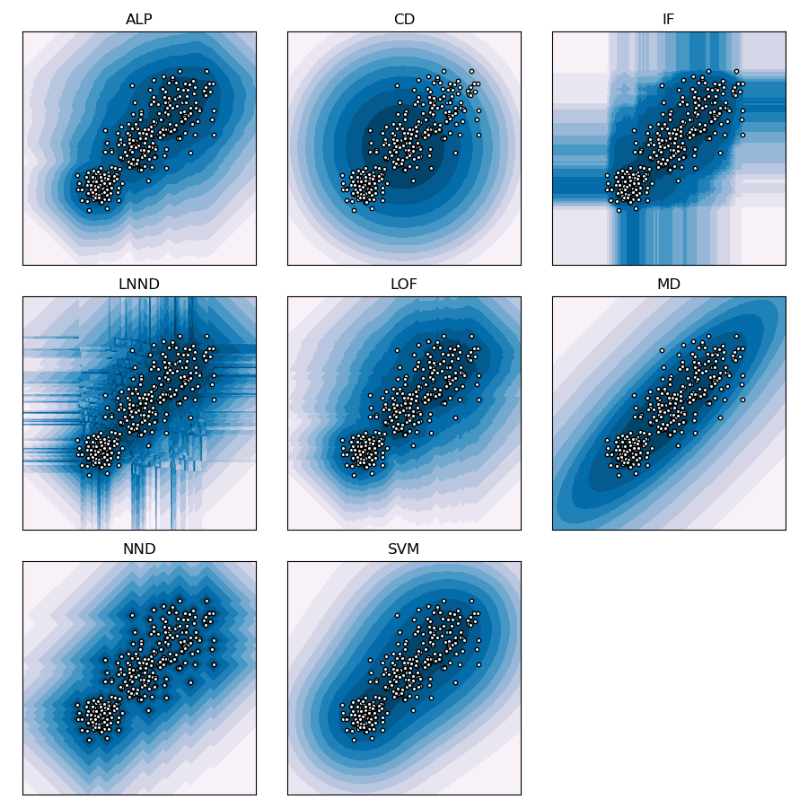

Note
Go to the end to download the full example code.
One class classification#
Data descriptors generalise knowledge about a target class of data to the whole attribute space. This can be used to predict whether new data instances belong to the target class or not, or to identify which new instances should be subjected to further inspection. This type of binary classification is known as one-class classification, semi-supervised outlier detection, semi-supervised anomaly detection, or novelty detection. In principle, there is no good or bad way to generalise the target class, this can only be evaluated empirically. In practice, we want a good balance between variance and bias.
The following graphs illustrate the behaviour of the data descriptors in fuzzy-rough-learn, with their default hyperparameter values as established in [1]. Note that the predicted scores have been converted to quantiles to obtain clear contour lines that illustrate how the predicted scores taper off.
References#
print(__doc__)
import numpy as np
import matplotlib.pyplot as plt
from frlearn.data_descriptors import ALP, CD, IF, MD, NND, LNND, LOF, SVM
# Sample attribute space, to use as test data
xx, yy = np.meshgrid(np.linspace(-6, 6, 300), np.linspace(-6, 6, 300))
# Generate training data
rng = np.random.default_rng(0)
X = rng.standard_normal((100, 2))
X_train = np.r_[1 * X + 2, 0.75*X, 0.5 * X - 2]
# Initialise data descriptors to include
data_descriptors = [
('ALP', ALP()),
('CD', CD()),
('IF', IF()),
('LNND', LNND()),
('LOF', LOF()),
('MD', MD()),
('NND', NND()),
('SVM', SVM()),
]
# Calculate number of rows
cols = 3
rows = (len(data_descriptors) + (cols - 1)) // cols
# Create plot layout with square subplots
fig, axs = plt.subplots(rows, cols, figsize=(3*cols, 3*rows), subplot_kw=dict(box_aspect=1), )
# Iterate over data descriptors
for i, (name, clf) in enumerate(data_descriptors):
ax = axs[i // cols][i % cols]
# Create model and query for scores
model = clf(X_train)
Z = model(np.c_[xx.ravel(), yy.ravel()])
# Transform scores into their respective centile
centiles = np.quantile(Z, np.linspace(0, 1, 101))
Z = np.searchsorted(centiles, Z)/100
Z = Z.reshape(xx.shape)
# Plot contours
ax.contourf(xx, yy, Z, levels=np.linspace(0, 1, 12), cmap=plt.cm.PuBu)
# Plot training data
c = ax.scatter(X_train[:, 0], X_train[:, 1], c='white', s=10, edgecolors='k')
# Set axis limits and delete ticks and legends
plt.xlim((-6, 6))
plt.ylim((-6, 6))
c.axes.get_xaxis().set_visible(False)
c.axes.get_yaxis().set_visible(False)
ax.set_title(name)
# Delete spare subfigures
for i in range((-len(data_descriptors)) % cols):
fig.delaxes(axs[-1, -(i + 1)])
fig.tight_layout()
plt.show()
Total running time of the script: (0 minutes 1.844 seconds)